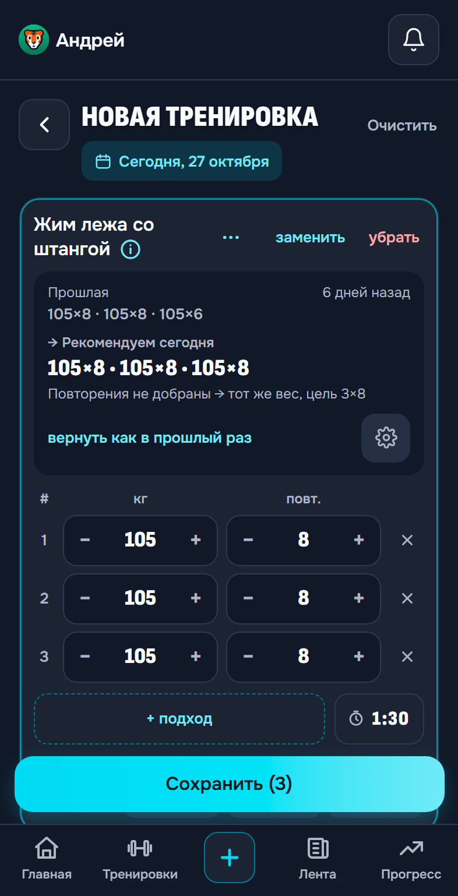

Запись без лишних тапов
Прошлый результат уже перед глазами. Приложение подскажет вес и повторы на сегодня, а ты только поправишь, если день не тот.
- Шаблоны тренировок: не собирай одно и то же заново
- Таймер отдыха с уведомлением на заблокированном экране
- Сканер: название тренажера читается с таблички камерой